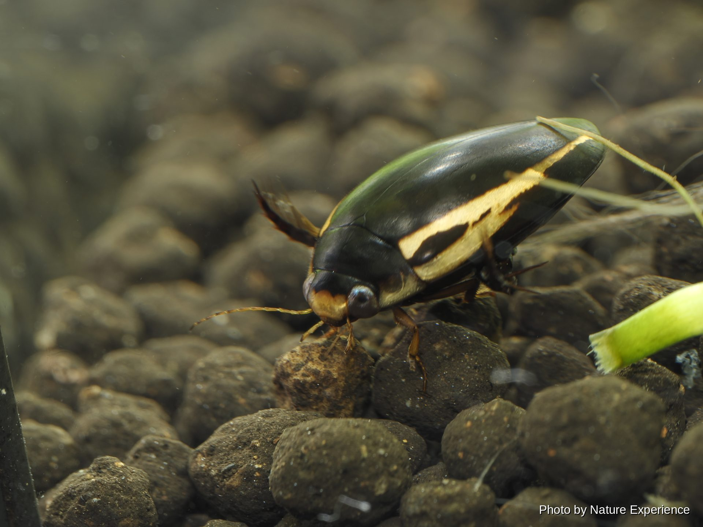
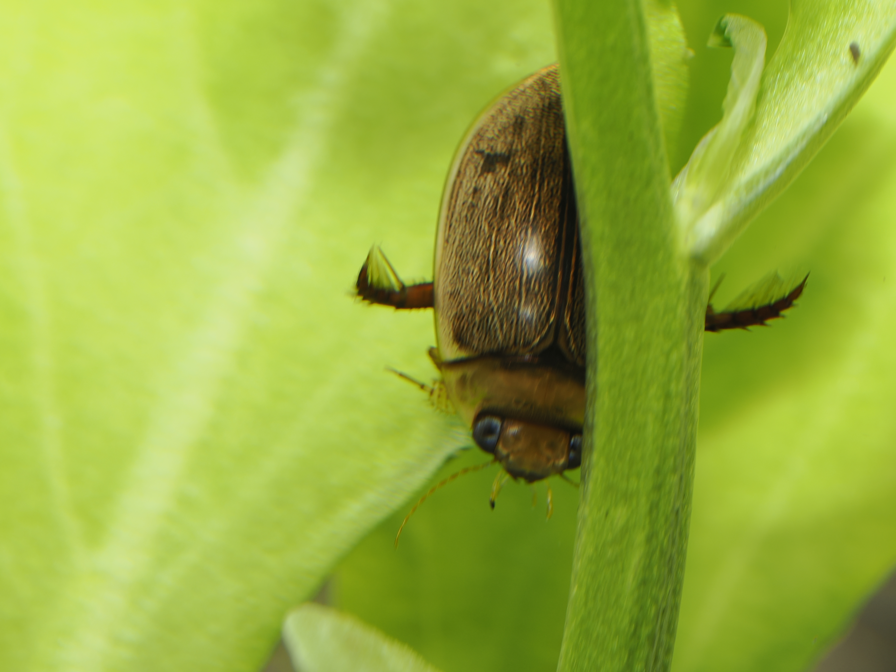

FIELD GUIDE
奄美で出会えるsuisei-konntyuu
ゲンゴロウの仲間

オキナワスジゲンゴロウ
ゲンゴロウ科シマゲンゴロウ属 Prodaticus vittatus(旧学名 Hydaticus vittatus)
体長11〜14mm。屋久島・南西諸島に分布し、国外では台湾、中国、東南アジアにも生息する南方系のゲンゴロウ。水生植物の豊富な池沼や水田などの止水域に生息する。かつては比較的普通に見られたが、生息環境の減少により数を減らしており、環境省レッドリストで絶滅危惧II類に指定されている。同属のスジゲンゴロウ(本州以西に分布)によく似るが、分布域が異なるため見分けやすい。
採集自由(環境省レッドリスト:絶滅危惧II類)
トビイロゲンゴロウ
ゲンゴロウ科ゲンゴロウ属 Cybister sugillatus
体長18〜25mm。日本国内では南西諸島に分布し、国外では台湾、中国、東南アジア、ネパール、インド、スリランカ、チベット、フィリピンにも生息する。クロゲンゴロウによく似るが、体形はやや細い卵型で、背面は光沢のある緑色から黒褐色。南西諸島に分布する近縁種(トビイロゲンゴロウ・フチトリゲンゴロウ・ヒメフチトリゲンゴロウ)の中では、比較的個体数が安定しているとされる。水生植物の豊富な浅いため池や放棄水田などに生息する。
採集自由
ウスイロシマゲンゴロウ
ゲンゴロウ科シマゲンゴロウ属 Hydaticus rhantoides
体長10〜11mm程度の小型のゲンゴロウ。前翅は全体的に黄褐色で、目立つ縞模様は無い。本州以西では局所的にしか見られないが、南西諸島では普通に見られ、奄美大島でも記録がある。水田や池沼などの開けた止水域に生息する。南西諸島のゲンゴロウの中では、トビイロゲンゴロウ・コガタノゲンゴロウとともに比較的健在な種とされる。
採集自由EXPLORE MORE